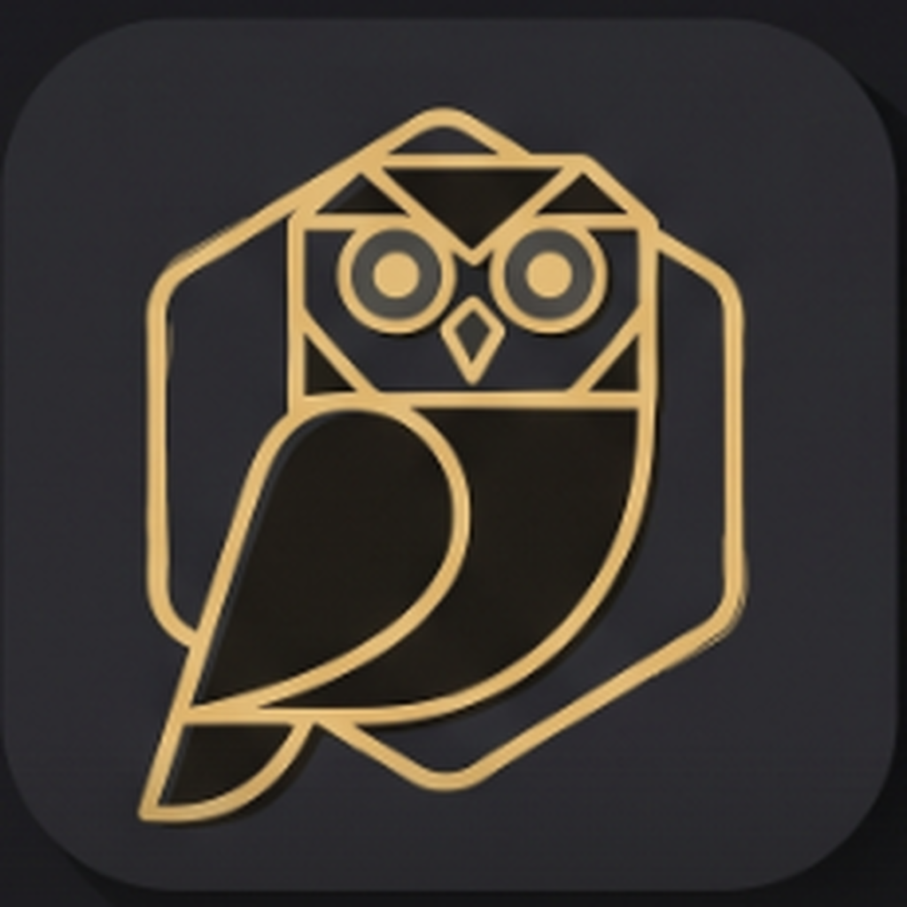
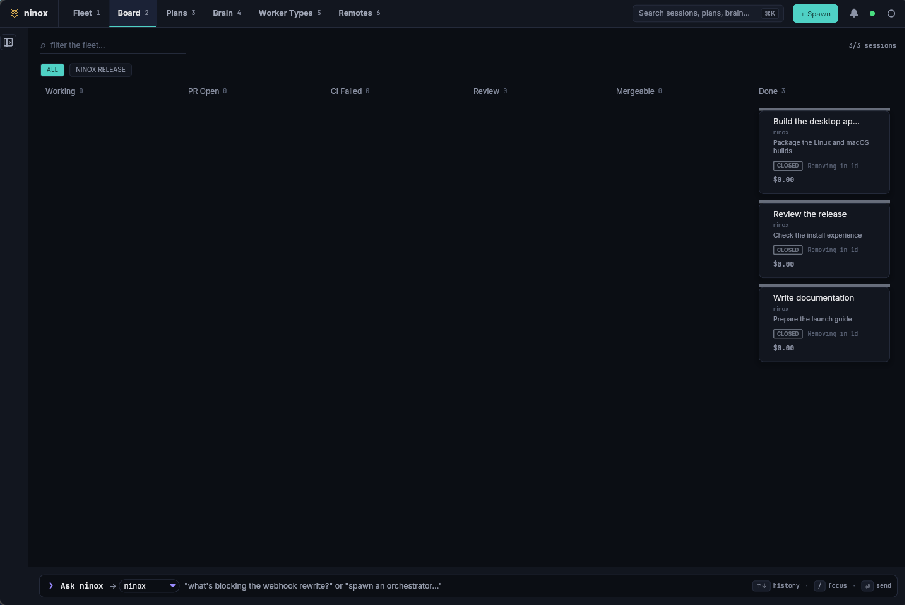

A fleet, not a pile of tabs.
See orchestrators and workers together. Use the fleet and board views to understand where work stands.

ninoxGive your agents room to work together—and give yourself a better way to see what happens next.

From the first brief to a merged pull request, Ninox gives your agent fleet a shared place to work and you a clear way to follow along.
See orchestrators and workers together. Use the fleet and board views to understand where work stands.
Keep plans and a searchable shared brain alongside the sessions doing the work.
Use the native desktop app or the terminal interface for a keyboard-first workflow, locally or over SSH.
Give an orchestrator the goal and the context it needs.
Each worker has its own session and workspace for its task.
Follow progress, communicate with agents, and inspect pull-request state.
Get started with the desktop app through Homebrew. Prefer a terminal? Install ninox-tui instead.
Prebuilt formulae support Linux x86_64 and Apple silicon macOS. All installation options →
brew tap made-by-moonlight/tap brew trust --formula made-by-moonlight/tap/ninox-gui brew install made-by-moonlight/tap/ninox-gui
On macOS, the ninox-app cask installs the app bundle.